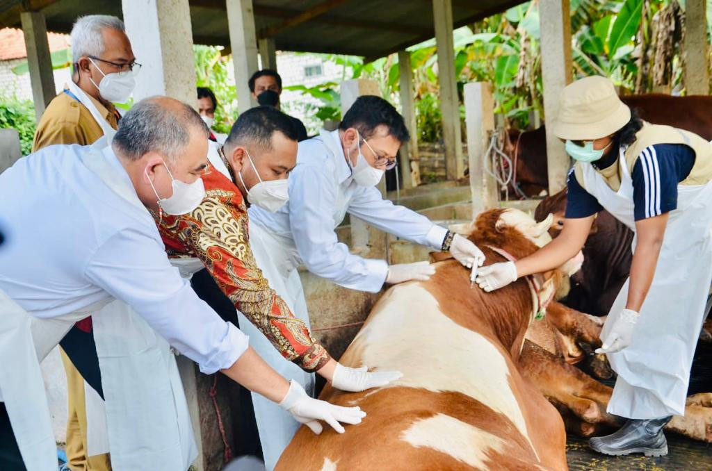

Explain monitoring, surveillance and freedom from infection. Consider sampling, test sensitivity and testing intervals.
| Term | What it is | FMD example |
|---|---|---|
| Monitoring | Routine, ongoing collection of data on health or disease. It shows trends and changes over time. It does not always lead to an action. | Recording FMD reports and vaccination coverage in a district each month. |
| Surveillance | Systematic, ongoing collection, analysis and sharing of information on disease, so that action can be taken. It has a clear purpose, such as early detection or proving freedom. | Testing a sample of herds every year and reporting the results to the veterinary authority. |
| Freedom from infection | The pathogen is absent from a population, country or zone. Surveillance cannot prove zero infection. It shows that infection is unlikely to be present above a set level (the design prevalence), with a stated confidence. | A zone claims to be free of FMD after repeated negative surveys with a sensitive test. |
Why this matters for testing. Surveillance results depend on the test, how many animals are sampled and when they are tested. The tasks below show how each one changes what a negative result means.
We cannot test every animal, so we sample. We ask: if infection were present at a low level, how likely is it that our sample finds at least one positive? If the whole sample is negative, we can say infection is unlikely above that level.
Three inputs:
Worked example. DP = 5%, Se = 90%, confidence = 95%.
Reading the result. If all 66 animals test negative, we are 95% sure the survey would have found infection if 5% or more of the animals were infected. This is not proof of zero infection.
What changes n. A lower design prevalence needs many more animals: at DP = 1% and Se = 90%, n = 332. A less sensitive test also needs more animals. The formula assumes random, independent sampling from a large population. Try it in Task 4.2 below.
Probability of at least one positive among n animals = 1 − (1 − design prevalence × sensitivity)n. This assumes independent, representative sampling from a large population.
A negative result only tells us about the moment of sampling. Infection can be missed in two ways:
Use the right test at the right time. Choose a test that can detect infection at the stage you sample, and set the sampling interval to match how fast the disease spreads. The next task shows how to check when a test can first detect infection.
Scenario. You are a veterinary officer in East Java, Indonesia. An FMD outbreak is currently ongoing in West Java. You want to determine whether FMD has spread to East Java. You conduct testing in cattle in East Java to provide evidence that there is no FMD infection in the region.

Survey design. Confidence is 95%. Design prevalence is 1%. Assume the animals are sampled at random from a large population.
Presentation. Present your answers to Exercise 4.1 in a short presentation. Show the test you chose and why, the sensitivity value and its source, your sample size calculation, and what a negative result means for East Java.